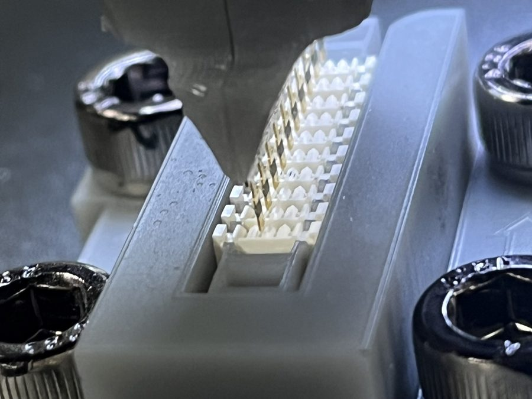
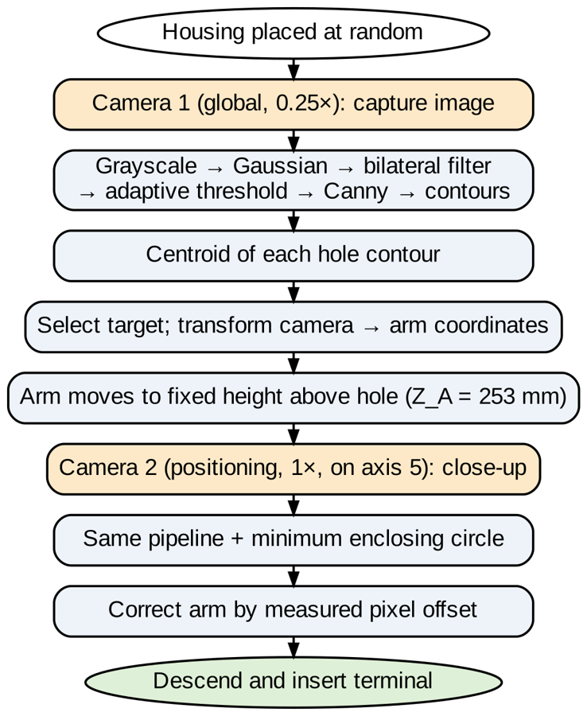
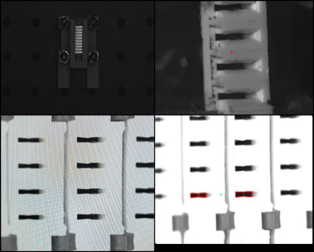
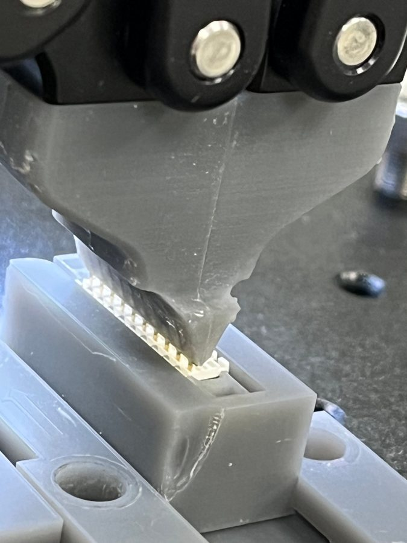
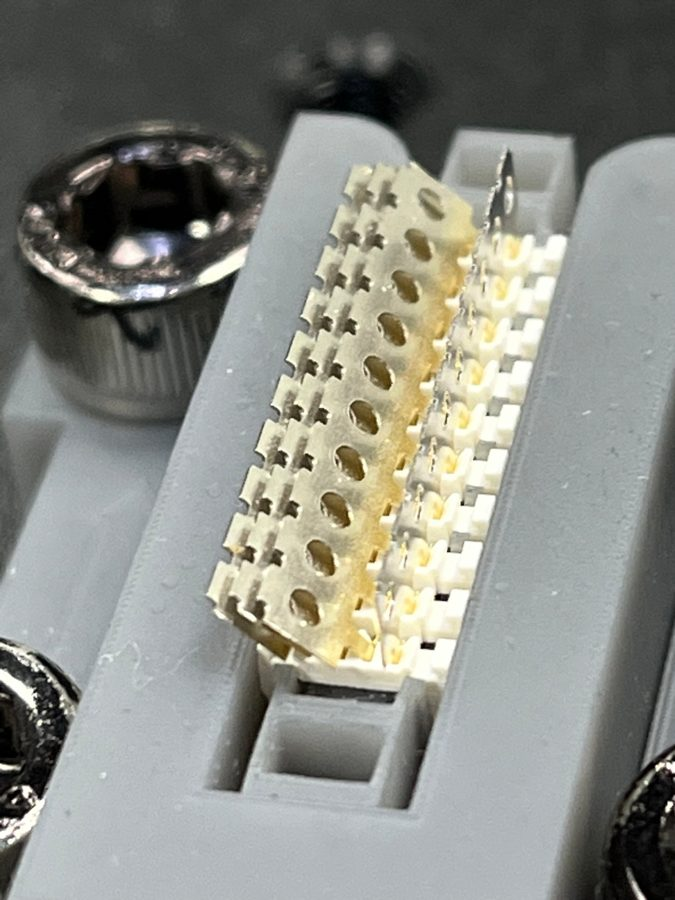

Electronic connectors made in small batches are still wired by hand, because dedicated machines do not pay off. We automated one step on such a line: a Techman collaborative arm inserts a row of terminals into housing holes about 600 µm × 150 µm. That tolerance is finer than the arm's own repeatability, so the arm has to be guided by what the cameras see.
One camera cannot both find the housing and measure a hole this small. A global camera (6.5 µm/pixel) finds the housing and its holes anywhere in its view. The arm then moves above the target hole, and a close-up camera on the arm (1.67 µm/pixel) measures the remaining offset. The arm corrects by that pixel error before it inserts the terminals. The whole cycle runs under ROS 2.


Each image goes through grayscale conversion, Gaussian and bilateral filtering, adaptive thresholding and Canny edge detection. The bilateral filter removes noise but keeps the hole edges sharp, and the adaptive threshold handles uneven lighting. The centroid of each contour, or in the close-up the center of its minimum enclosing circle, gives the hole center.
A full camera-to-arm transformation has 12 unknowns. The holes lie in one plane and the arm always takes the close-up at the same height, so only the planar part remains and the unknowns drop to 6. We calibrated them on the real setup and repeated the tests until the converted coordinates matched the arm motion.
The vision algorithm itself worked well. The real problems came from the line. Terminals already inserted cast shadows that changed the image of the next row, so we tuned the image processing for each row. A slight bump to the arm's base could also shift the calibration, so the camera measured reference markers to detect the drift and recompute the transformation.

